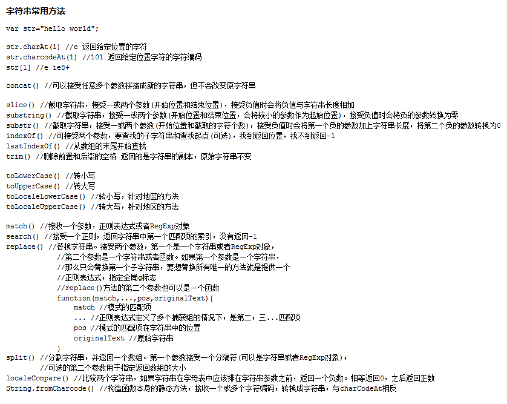

arr/str.indexOf(元素) 返回元素索引，没有找到就返回-1
arr/str.concat(数组/字符串) 拼接
arr/str.slice(开始索引,) 截取
arr = str.split(,) 字符串转换成数组
str = arr.join(,) 数组转换成字符串
str.charAt(索引) 返回给定位置的字符
arr.push(元素)/pop(元素) 数组末尾增加或删去元素
arr.unshift(元素)/shift(元素) 数组头部添加或删去元素
var arr=[1,2,3,4,5]
var arr1=arr.map(function(a){ return a*2})//映射
console.log(arr1)//[2,4,6,8,10]
var arr2=arr.filter(function(a){ return a>2})
console.log(arr2)//[3,4,5] 过滤
var arr3=arr.every(function(a){ return a>2})
console.log(arr3) //false 逻辑与
var arr4=arr.some(function(a){ return a>2})
console.log(arr4) //ture 逻辑或
var arr5=arr.reduce(function(a,b){ return a+b})
console.log(arr5) //1+2+3+4+5=15 计算
注：平均数const average = (...nums) => nums.reduce((acc, val) => acc + val, 0) / nums.length;
average(...[1, 2, 3]); // 2
//indexOf方法去重
var arr = [1,2,3,4,2,2,3,4,5,6,7,5];
var arr1=[];
for(var i=0;i<arr.length;i++){
if(arr1.indexOf(arr[i])==-1){arr1.push(arr[i]) }
}
console.log(arr1)//[1,2,3,4,5,6,7]
//双循环去重
var arr2 = [1,2,3,4,2,2,3,4,5,6,7,5];
for(var i=0;i<arr2.length;i++){
for(var j=0;j<i;j++){
if( arr2[i]==arr2[j]){
arr2.splice(i,1);
i=i-1; }
}
}
console.log(arr2)//[1,2,3,4,5,6,7]
//Set解构赋值去重,Set是ES6新的数据结构，成员的值都是唯一的没有重复的值
var arr3 = [1,2,3,4,2,2,3,4,5,6,7,5];
console.log([...new Set(arr3)]);//[1,2,3,4,5,6,7]
arr=[1,2,3,'a','b','c']
//增加
console.log(arr.push('D'))//返回数组长度7
console.log(arr)//[1,2,3,'a','b','c','D']
console.log(arr.unshift('A'))//返回数组长度8
console.log(arr)//['A',1,2,3,'a','b','c','D']
console.log(arr.splice(7,0,'d'))//返回被删去的元素[]
console.log(arr)//['A',1,2,3,'a','b','c','d','D']
//删去
console.log(arr.pop())//D
console.log(arr)//['A',1,2,3,'a','b','c','d']
console.log(arr.shift())//A
console.log(arr)//[1,2,3,'a','b','c','d']
console.log(arr.slice(3,5))//['a',b]
console.log(arr)//[1,2,3,'a','b','c','d']
console.log(arr.splice(0,3,'A','B','C'))//返回被删去的元素[1,2,3]
console.log(arr)//['A','B','C','a','b','c','d']
//改动
arr[3]='A'
console.log(arr)//['A','B','C','A','b','c','d']
arr.length=9
console.log(arr)//['A','B','C','A','b','c','d',undefined,undefined]
console.log(arr.sort())//['A','A','B','C','b','c','d',undefined,undefined]
console.log(arr.reverse())//[undefined,undefined,'d','c','b','C','B','A','A']
//查询
console.log(arr.length)//9
console.log(arr.indexOf(undefined))//-1
//拼接
console.log(arr.concat([9,10]))//[undefined,undefined,'d','c','b','C','B','A','A',9,10]
console.log(arr.join('-'))//--d-c-b-C-B-A-A
console.log(arr)//拼接不改变原数组[undefined,undefined,'d','c','b','C','B','A','A']
